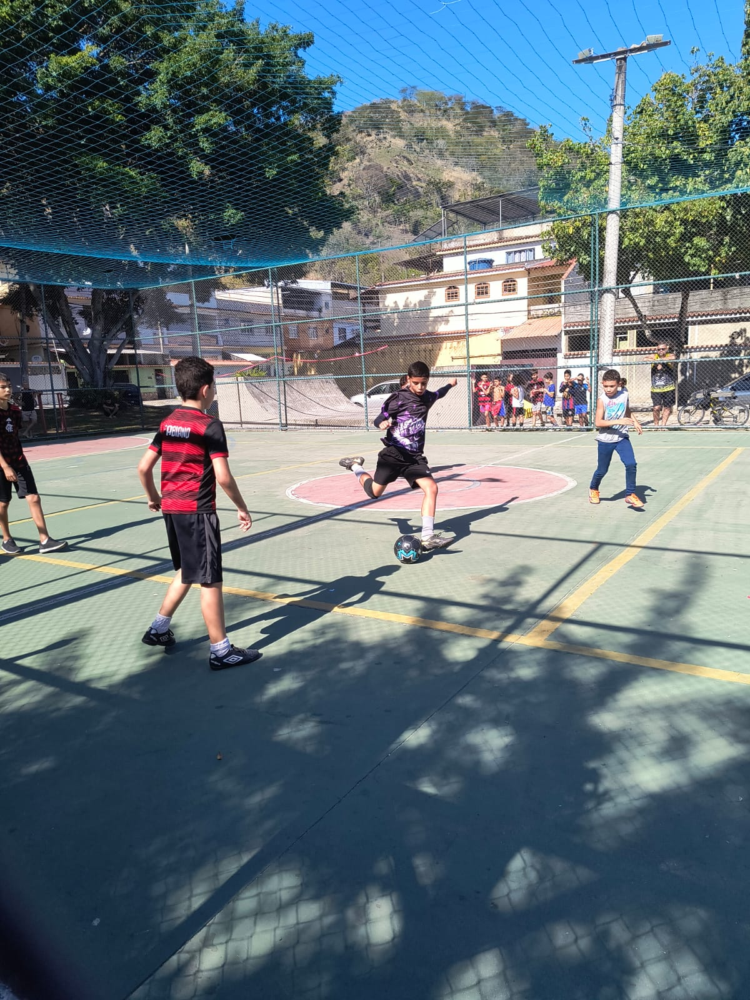
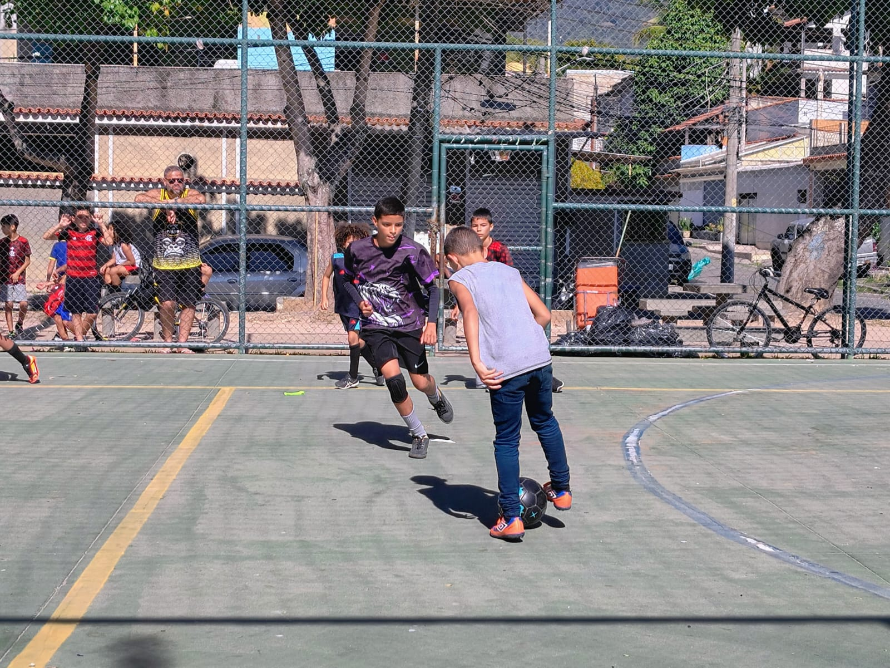

O time dos Crias mostrou uma superioridade técnica goleando o Real Cria por 12 a 1. Guilherme N. e Guilherme marcaram 3 vezes cada um. Arthur Felizardo coloca a mão na bola em sua área de defesa e o juiz marcou pênalti. Thomás converteu a cobrança marcando seu primeiro gol na liga. Arthur Santos deixou sua marca. O destaque da partida foi para Arthur Fernando que marcou 4 vezes e deu várias assistências. O gol de honra do Real Cria foi um gol contra marcado por Arthur C. dos Crias FC. Miguel, do Real Cria, fez uma falta forte e levou cartão amarelo.

Foto: Andreia
A partida começou muito equilibrada com os dois times buscando o gol. Nathan marcou duas vezes colocando o Fla Crias na frente no placar. Davi Berguer diminuiu a vantagem no placar marcando um belo gol. Ângelo, que recebeu cartão amarelo na partida, aumentou a diferença no placar, marcando para o Fla Crias. Guilherme Berguer, que também levou um cartão amarelo, marcou novamente encostando no placar(3 x 2). Quando o jogo parecia se encaminhar para o empate devido a pressão que o Flamengo fazia, Miguel marca o seu gol liquidando a partida que foi muito intensa. Também levou cartão amarelo, o jogador Davi Delgado, que se mostrou muito nervoso durante a partida.

Foto: Andreia